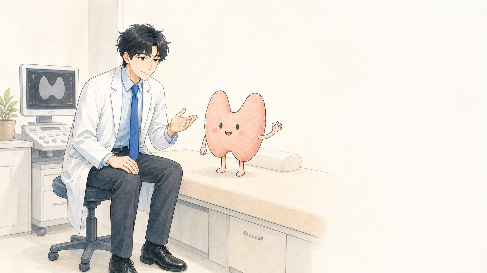
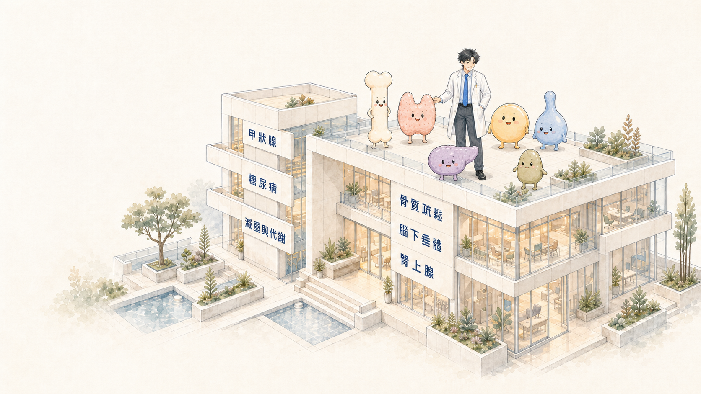
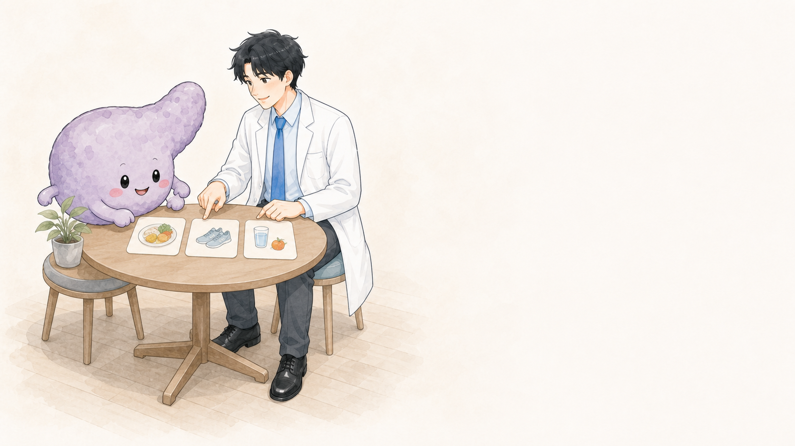
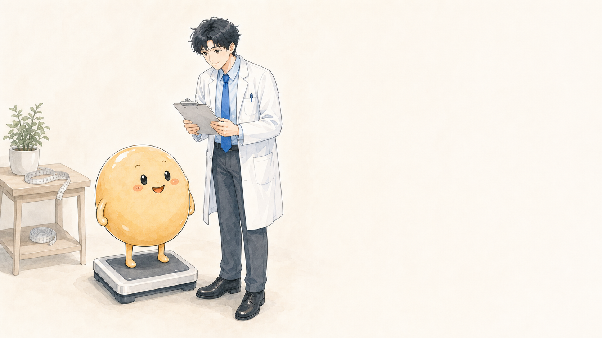
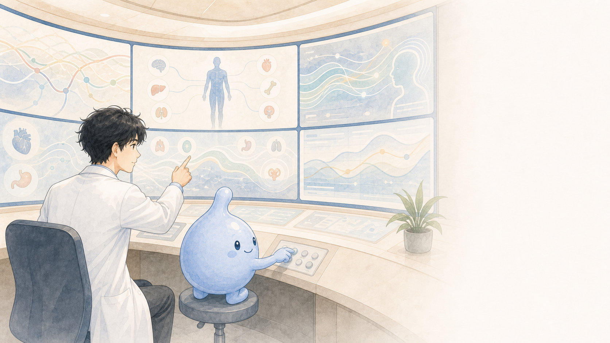

01 · THYROID
甲狀腺
身體的變化，有時從頸部這個小小的器官開始。
甲狀腺參與調節代謝、心跳、體溫與能量運用。當抽血數值異常、頸部摸到腫塊，或超音波發現結節時，需要配合症狀與檢查結果一起判斷。
DR. WHEAT · ENDOCRINOLOGY
小麥醫師陪你認識內分泌、代謝與甲狀腺健康。


01 · THYROID
身體的變化，有時從頸部這個小小的器官開始。
甲狀腺參與調節代謝、心跳、體溫與能量運用。當抽血數值異常、頸部摸到腫塊，或超音波發現結節時，需要配合症狀與檢查結果一起判斷。

02 · DIABETES
從看見數字，到理解日常生活如何影響血糖。
糖尿病照護不只關注單次血糖，也需要一起理解飲食、活動、藥物與生活節奏。

03 · METABOLISM
體重不是成績，而是認識身體組成與代謝狀態的起點。
透過完整評估與持續追蹤，找出適合個人的健康管理方向。

04 · BONE HEALTH
看起來有精神的骨頭，也需要定期了解內在的支撐力。
骨質流失通常沒有明顯感覺，適時評估有助於提早理解骨折風險。

05 · PITUITARY
小小的腺體，協調著身體裡許多重要訊號。
當多種訊號彼此影響時，需要整合症狀、荷爾蒙檢查與影像資料進行評估。
ABOUT DR. WHEAT
這一頁將呈現黃醫師的正式介紹、專長、經歷與照護理念。目前內容為結構示意，待提供正式資料。
正式姓名、現職、專長與建立小麥醫師品牌的初衷。
讓民眾理解檢查與治療的理由，一起討論適合的下一步。
學歷、經歷、證照、學會與專業訓練。
甲狀腺、糖尿病、減重與代謝、骨質、腦下垂體與腎上腺。
SERVICES
快速找到相關症狀、檢查、照護方向與延伸文章。
BODY SIGNALS
相同症狀可能有不同原因，仍需由醫師結合病史與檢查結果判斷。
可能需要觸診、超音波或進一步評估。
可配合甲狀腺功能抽血了解。
症狀可能來自不同原因，不宜自行判斷。
TESTS
TREATMENTS
認識甲狀腺微創治療的原理、評估、流程、限制與後續追蹤。
RFA
透過細針將熱能作用於甲狀腺結節，使結節逐步縮小的微創治療方式。
完整了解 RFA →ETHANOL ABLATION
依病灶情況評估的微創處理方式，適用方向與 RFA 不完全相同。
了解酒精消融 →BEFORE TREATMENT
已完成必要檢查、結節造成症狀或外觀困擾，並希望了解不同治療選項。
PROCESS
說明活動、飲食、藥物與回診注意事項。
不淡化疼痛、出血、聲音變化與鄰近組織影響。
結節變化有個別差異，治療後仍需持續追蹤。
FIND ANSWERS
輸入症狀、檢查、疾病或治療名稱，搜尋網站內經過整理與審閱的內容。
本功能協助尋找網站內容，不提供診斷或個人化治療建議。
摸到腫塊或吞嚥時感到異物。
可能需要進一步了解荷爾蒙與其他原因。
認識血糖、糖化血色素與追蹤。
從生活、代謝與荷爾蒙多面向評估。
了解可能需要評估的內分泌因素。
認識骨密度與骨折風險。
HEALTH LIBRARY
文章將由內容團隊整理並經醫師審閱，顯示發布、更新與參考資料。
THYROID · 衛教文章
多數甲狀腺結節不一定需要立即治療，下一步需依影像特徵、症狀與必要檢查整體判斷。
撰文：網站內容團隊 醫療審閱：黃醫師（待確認） 最後更新：待確認
甲狀腺結節是甲狀腺內出現的局部變化。許多結節是在健康檢查或影像檢查中意外發現。
醫師可能根據症狀、病史、甲狀腺功能抽血與超音波特徵，判斷是否需要持續追蹤或進一步檢查。
可能方向包含定期追蹤、進一步檢查、微創治療或手術評估。實際選擇需依個別狀況討論。
正式發布前由黃醫師提供或確認。
CLINIC INFORMATION
正式版將由 Notion 管理醫療院所、門診時段、掛號網址與臨時公告。
CONTACT
可以透過 LINE OA 尋找相關內容，或使用 Email 提供網站回饋與合作聯絡。
正式版會使用 LINE URL Scheme，把你輸入的文字帶到 LINE 輸入框；訊息仍由使用者確認後自行傳送。